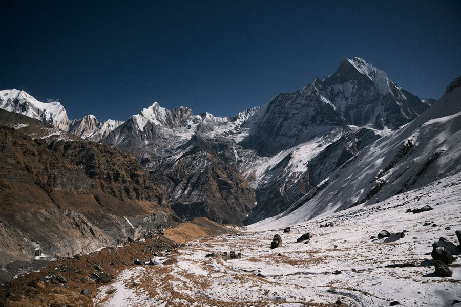
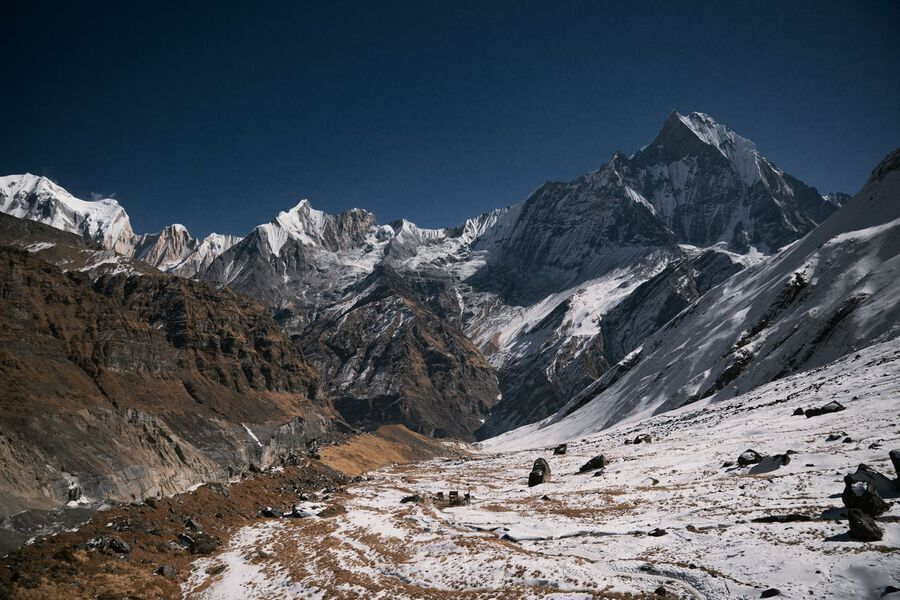

Hiking | Annapurna Base Camp

 


OVERVIEW
Are you ready to challenge yourself on an adventure that stays with you for an eternity! We might have the perfect experience planned for you. Annapurna Base Camp (ABC) Trek probably is one of the most popular trekking itineraries in Nepal. The journey up in the mountains is undoubtedly tiring, but the views are definitely worth the prize! Come and join the people who share similar interests as you accompany them on the journey to the Himalayas. The trail is a roller coaster of terrains going up and down as you travel on one of the most loved high-altitude treks in Nepal.
The ABC trek is a relatively short trek that happens to be popular even amongst the nationals in Nepal. The hike gives people a chance to capture the close-up views of the Annapurna range and many other mountains. The trip is indeed a step to help you quench your thirst for the mountains. An excellent opportunity to view the mountains as you stand directly beneath them, breathing the air of the Himalayas near the Annapurna Sanctuary.
During the spring season, travelers can see many species of flora and fauna, including the national flower of Nepal, the Rhododendron. You can expect to see many waterfalls and learn about the rich culture of the Magar and Gurung people living in the region. The trek is doable for most people with an average fitness level and does not require any prior trekking experience. One of the most commercialized and accessible tours in Nepal, we start with the beautiful city of Pokhara as our first trek route. Our trekking journey continues to traverse the villages surrounded by lush green mountains, quiet mountainous villages, and bamboo forests as we travel to Ghorepani, Chhomrong, and ABC through Machhapuchhre Base Camp (MBC).
Why do you need to get on this tour! Travel to the Annapurna conservation area project that abodes numerous flora and fauna and trek to the Annapurna Base Camp’s highest point as you observe the Annapurna glacier! One of the major trekking routes in Nepal will reward you with views of the Annapurna and Machhapuchhre range through MBC and ABC. Indulge in the exquisite culture and tradition as you meet the humble hosts, the Gurung people, and be a part of the daily lives in Ghandruk village. Enjoy the incredible sceneries, lush green landscapes, terraced farming, rhododendron forests, and glacier rivers as you walk through one of the most relaxed and comfortable tours in Nepal. A possible trip all year round boasts of the views of the majestic (Fishtail mountain), the Machhapuchhre, Mt. Himchuli, Mt. Annapurna, and other neighboring ranges. Travel to the beautiful Poon Hill, a vantage point for viewing the unreal beauty of the shining golden magical sunrise upon the mighty mountains. Jump and de-stress in the natural hot springs of Jhinu Danda, a perfect spot to take the stress of the days away! Celebrate the accomplishment of standing below the mountains with your team members at an elevation of 4130 meters!
In addition to the magnificent views, the Annapurna Base Camp Trek allows travelers an opportunity to go through the fantastic trekking trails through the cultural settlement of villages on the foothills of the Annapurna range. The region abodes the ethnic communities of the Magar and Gurung people. The communities still follow the local culture that has a heavy foundation of Buddhism and Hinduism. Along with the solid mountain views, the trail passes through the rural villages, waterfalls, beautiful landscapes, and sheer cliffs with rivers passing below. Additionally, you will be able to observe beautiful temples, monasteries, Gompas, and religious shrines representing the region’s local heritage. The hosts of the region will warm you with their humble hospitality and continuous service. Similarly, the teahouses in the area will also help you keep comfortable at times. Furthermore, the enduring popularity of the Annapurna Base Camp Trek is due to its accessibility. We bet you will never realize how quickly time flies while you are up and running in the mountains. Additionally, the journey is an enjoyable one because it is moderately complex and is doable even without any prior trekking experience.